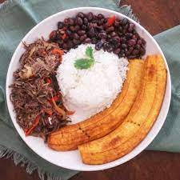

Pabellon

Pabellon criollo
Pabellón criollo is a traditional Venezuelan dish that consists of shredded beef, black beans, white rice, and fried plantains. Here's a summary of the ingredients and preparation:
Ingredients
- shredded beef (cooked with onion, garlic, tomato sauce, and spices)
- Black beans (cooked with onion, garlic, bell pepper, and spices)
- White rice
- Ripe plantains (sliced and fried)
- Vegetable oil (for frying)
- Salt and pepper (to taste)
Steps
- Cook the shredded beef: In a pot, sauté onion and garlic until golden brown. Add the cooked shredded beef, tomato sauce, and spices (such as cumin, paprika, and chili powder). Cook until the beef is heated through and the flavors are combined.
- Cook the black beans: In a separate pot, sauté onion, garlic, and bell pepper until soft. Add cooked black beans, water, and spices (such as cumin and oregano). Cook until the beans are heated through and the flavors are combined.
- Cook the white rice: Rinse the rice and cook it with water and salt until tender and fluffy.
- Fry the plantains: Heat oil in a skillet over medium-high heat. Add the sliced plantains and fry until golden brown on both sides.
- Assemble the dish: Place a serving of rice on a plate and top it with a serving of black beans, followed by a serving of shredded beef. Garnish with the fried plantains.